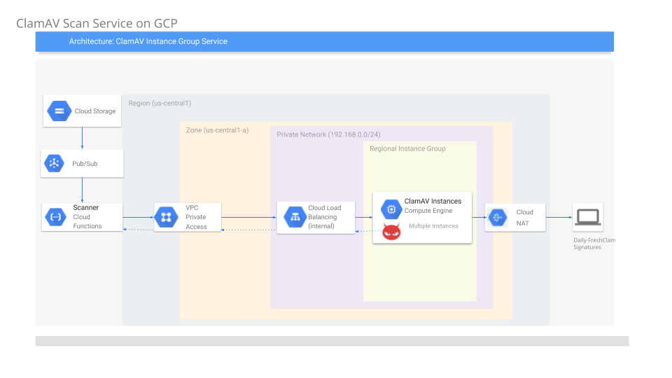
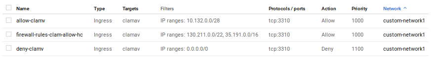
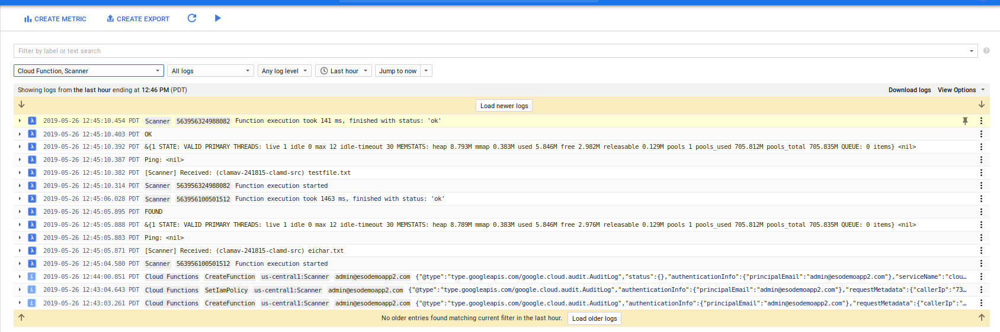

ARTICLES
Anti Virus file scanning on Google Cloud Storage using ClamAV
Tutorial on how to use ClamAV to scan files uploaded to Google Cloud Storage (GCS).
GCS does not have any built in capability to scan or do any other type of preprocessing on its files and relies on other services to perform these steps. In this tutorial, we will process a file that gets uploaded to GCS for viruses, malware, etc using ClamAV.
Architecture
The basic flow outlined here is:
User uploads a file to Cloud Storage
once uploaded, Cloud Storage Object Change Notification get triggered.
Notifiation invokes a Cloud Functions
Cloud Function (GCF) reads the file as a stream
GCF uses Cloud Functions Private Access VPC to send the file stream to a VM running ClamAV
GCF dials an Internal Load Balancer IP address
ILB connects with an autoscaled Managed Instance Group running ClamAV. Clam AV process the stream and responds back to GCF with an assessment of the file
(ClamAV periodically requests updated virus definitions using Cloud NAT for external communication.)

Setup
Set Environment Variables
export GOOGLE_PROJECT_ID=`gcloud config get-value core/project`
export GOOGLE_PROJECT_NUMBER=`gcloud projects describe $GOOGLE_PROJECT_ID --format="value(projectNumber)"`
export BUCKET_SRC=`gcloud config get-value core/project`-clamd-src
export QURANTINE_DEST=`gcloud config get-value core/project`-clamd-qurantine
export REGION=us-central1
export ZONE=us-central1-a
Configure Custom Network
gcloud compute networks create custom-network1 --subnet-mode custom
gcloud compute networks subnets create subnet-$REGION-192 --network custom-network1 --region $REGION --range 192.168.1.0/24
note: we are creating a custom subnet 192.168.1.0/24 used exclusively for the ClamAV cluster. You can use any network but this setup sets up a custom range that can be isolated easily.
Configure Cloud NAT
Setup NAT on the custom subnet where each ClamAV instance can request updated virus definitions.
gcloud compute routers create nat-router --network custom-network1 --region $REGION
gcloud compute routers nats create nat-config \
--router=nat-router --auto-allocate-nat-external-ips \
--nat-custom-subnet-ip-ranges=subnet-$REGION-192 --region $REGION
GCS
- Create GCS buckets and set iam permissions
gsutil mb -c regional -l $REGION -p ${GOOGLE_PROJECT_ID} gs://${BUCKET_SRC}
gsutil mb -c regional -l $REGION -p ${GOOGLE_PROJECT_ID} gs://${QUARANTINE_DEST}
BUCKET_SRCis the GCS bucket where your users upload files to.QUARANTINE_DESTis the GCS bucket where files with a detected virus will be saved. At the moment, the GCF function does not utilize this bucket and instead simply run analysis on the file.allow GCF to read from source and write to the quarantine.
gsutil iam ch serviceAccount:$GOOGLE_PROJECT_ID@appspot.gserviceaccount.com:roles/storage.objectViewer gs://${BUCKET_SRC}
gsutil iam ch serviceAccount:$GOOGLE_PROJECT_ID@appspot.gserviceaccount.com:roles/storage.objectCreator gs://${QUARANTINE_DEST}
- Here we are using GCF’s default service account:
$GOOGLE_PROJECT_ID@appspot.gserviceaccount.com
VPC Connector
- Setup a VPC connector for GCF to connect to the GCE network (ie, ultimately the ILB)
gcloud services enable cloudfunctions.googleapis.com
gcloud projects add-iam-policy-binding $GOOGLE_PROJECT_ID \
--member=serviceAccount:service-$GOOGLE_PROJECT_NUMBER@gcf-admin-robot.iam.gserviceaccount.com \
--role=roles/viewer
gcloud projects add-iam-policy-binding $GOOGLE_PROJECT_ID \
--member=serviceAccount:service-$GOOGLE_PROJECT_NUMBER@gcf-admin-robot.iam.gserviceaccount.com \
--role=roles/compute.networkUser
gcloud beta compute networks vpc-access connectors create myconnector --network=custom-network1 --region=$REGION --range=10.132.0.0/28
Note the IP range 10.132.0.0/28: this is the range that traffic from GCF will appear to originate from to the custom GCE network we just setup.
ILB+ MIG
- Create MIG Template
cd igm/
gcloud compute instance-templates create clamav-template --no-address --no-scopes --no-service-account --machine-type g1-small --tags clamav --network custom-network1 \
--image-family=debian-9 --image-project=debian-cloud --subnet=subnet-$REGION-192 --region $REGION \
--metadata-from-file startup-script=startup.sh
Create Firewall rules
gcloud compute firewall-rules create firewall-rules-clam-allow-hc --priority=1000 --network custom-network1 --allow=tcp:3310 --source-ranges=130.211.0.0/22,35.191.0.0/16 --target-tags=clamav gcloud compute firewall-rules create deny-clamv --direction=INGRESS --priority=1100 --network=custom-network1 --action=DENY --rules=tcp:3310 --source-ranges=0.0.0.0/0 --target-tags=clamav gcloud compute firewall-rules create allow-clamv --direction=INGRESS --priority=1000 --network=custom-network1 --action=ALLOW --rules=tcp:3310 --source-ranges=10.132.0.0/28 --target-tags=clamav
These firewall rules are important
- First rule allows GCP’s loadbalancer to perform TCP healthchecks
- Second rule prevents anyone accessing the ClamAV listener port 3310
- Third rule allows traffic orignating from the GCF to access the ClamAV instance’s listener port

Enable HealthCheck
gcloud compute health-checks create tcp hc-tcp-3310 \ --check-interval=5s \ --timeout=5s \ --healthy-threshold=2 \ --unhealthy-threshold=2 \ --port=3310Define MIG and AutoScaling
gcloud compute instance-groups managed create clam-central-ig --base-instance-name clamav --template=clamav-template --size=1 --zone=$ZONE
gcloud compute instance-groups managed set-autoscaling clam-central-ig \
--max-num-replicas 3 \
--target-load-balancing-utilization 0.6 \
--cool-down-period 90 --zone=$ZONE
A couple notes about the member VMs in this instance group. These VMs are small (g1), have NO public IP addresses and have NO GCP service accounts. We do this to limit its privileges. Also note that in the firewall rules for the custom subnet, we did not even define ssh access (port 22).
- Define and add Backend Service
gcloud compute backend-services create clam-map-backend-service --load-balancing-scheme=internal \
--protocol TCP --health-checks hc-tcp-3310 --region $REGION
gcloud compute backend-services add-backend clam-map-backend-service \
--instance-group clam-central-ig \
--instance-group-zone $ZONE --region $REGION
- Add Forwarding rule and ILB IP
gcloud compute forwarding-rules create clam-ilb \
--region=$REGION \
--load-balancing-scheme=internal \
--ip-protocol=TCP \
--ports=3310 --network custom-network1 \
--backend-service=clam-map-backend-service --subnet=subnet-$REGION-192 \
--backend-service-region=$REGION
- Acquire and note down the ILB IP that is allocated
In my case it is
$ gcloud compute forwarding-rules describe clam-ilb --region $REGION --format="value(IPAddress)"
192.168.1.6
Export the IP as a variable:
export ILB_IP=192.168.1.6
Create GCF
- Define the GCF function
cd gcf/
gcloud beta functions deploy Scanner --entry-point=Scanner --runtime go111 \
--trigger-resource=${BUCKET_SRC} --set-env-vars=BUCKET_DST=${BUCKET_DEST},ILB_IP=$ILB_IP \
--trigger-event=google.storage.object.finalize --project=${GOOGLE_PROJECT_ID} \
--timeout=540s --memory=256MB --vpc-connector projects/$GOOGLE_PROJECT_ID/locations/$REGION/connectors/myconnector
Test
Now that we have defined all the components, upload a sample test file and a file with a known test virus that ClamAV can detect
echo "hello world" > testfile.txt
gsutil cp testfile.txt gs://${BUCKET_SRC}
- eichar.txt:
X5O!P%@AP[4\PZX54(P^)7CC)7}$EICAR-STANDARD-ANTIVIRUS-TEST-FILE!$H+H*
gsutil cp eichar.txt gs://${BUCKET_SRC}
Once uploaded, you should see the the files getting processed: OK means nothing found..and quite vaguely FOUND means a virus is found in that file.

Limits
- GCF can run for at most
540sso any file that is streamed to the VM must finish within this timeline. If you need additional time, consider Cloud Run.
References
- LICENSE
This sample uses a golang library shim for clamv. For attribution and license, please see https://github.com/dutchcoders/go-clamd.